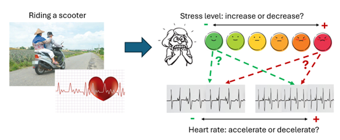

BAISP Lab
Biomedical Artificial Intelligence and Signal Processing Lab
智慧生醫與訊號處理實驗室
研究介紹 (Research Instroduction)

心臟體外灌流（cardiac extracorporeal perfusion，CPB）是心臟手術中使用的關鍵手術，但它可能影響患者的認知功能。本研究旨在透過分析腦電圖（electroencephalography，EEG）數據來研究體外循環對神經功能的影響，並採用深度學習技術來擷取腦電圖訊號的特徵，以預測手術後的認知能力變化。
Cardiac extracorporeal perfusion (CPB) is a key procedure used in cardiac surgery, but it may affect patients’ cognitive function. This study aims to (1) investigate the impact of CPB on neurological functions via electroencephalographical (EEG) data and to (2) develop deep learning architectures which capture the characteristics of EEG signals for the prediction of cognitive function after CPB.

本研究探討騎乘對高齡長者造成之壓力以及壓力對心率之影響。除了透過問卷量測騎車期間之壓力數值，我們也量測長者在平常狀態(填寫問卷)與壓力狀態(騎行機車)時之PPG訊號，以比較長者於騎乘機車時的心率變化。
This study explores the stress experienced by elderly individuals while riding scooters and how this stress affects their heart rate. We assess stress levels during scooter rides through questionnaires and also measure PPG (photoplethysmography) signals under normal conditions (while filling out questionnaires) and during the stressful activity of riding. This allows us to compare heart rate variations when they are riding a scooter.

藥物對泌尿疾病的難治型病患效果有限，因此亟需開發替代療法來改善患者生活品質，本研究探討經皮迷走神經刺激術（taVNS）對泌尿疾病之改善效果。taVNS透過電刺激耳朵的迷走神經分支以調控大腦內感受神經網路，因此可能改善膀對泌尿系統的感測與控制。本實驗的受試者進行每週兩次taVNS，為期四週的治療。我們蒐集了治療前和治療後患者之泌尿功能、生化檢測和腦部活動，以了解taVNS之治療效果並探索治療的機轉。
Medications often have limited effectiveness for patients with difficult-to-treat urological disorders, highlighting the need for alternative therapies to improve quality of life. This study investigates the effects of transcutaneous auricular vagus nerve stimulation (taVNS) on urological conditions. taVNS involves applying electrical stimulation to the auricular branch of the vagus nerve to modulate sensory networks in the brain, which may enhance the bladder's sensory and control functions. In this experiment, participants will undergo taVNS twice weekly for four weeks. We are going to collect data on urological function, biochemical tests, and brain activity before and after treatment to evaluate the efficacy of taVNS and explore its underlying mechanisms.